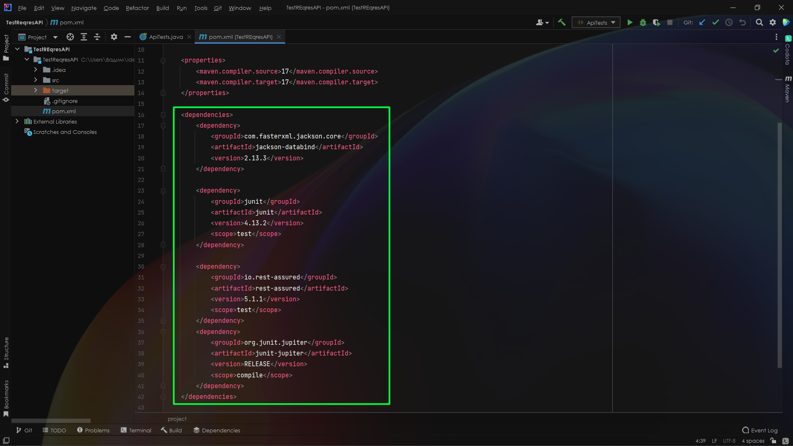
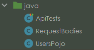
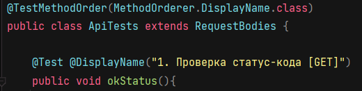
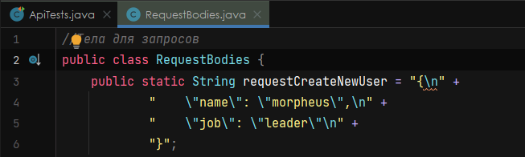
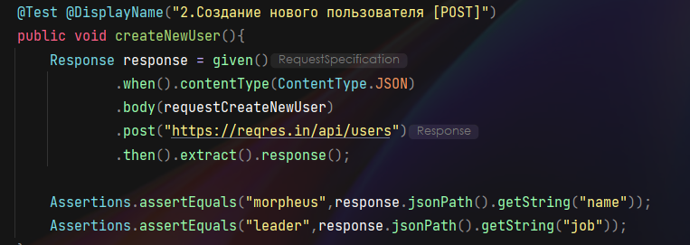
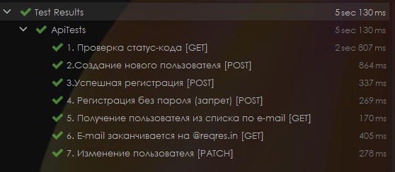

API Autotests 🌐 - REST-assured, JUnit5
📃 Был составлен следующий чек-лист:
1. Проверка статус-кода [GET]
2. Создание нового пользователя [POST]
3. Успешная регистрация [POST]
4. Регистрация без пароля (запрет) [POST]
5. Получение конкретного пользователя из списка по e-mail [GET]
6. E-mail заканчивается на @reqres.in [GET]
7. Изменение пользователя [PATCH]
🔗 Maven-зависимости в проекте:
Подключаю к проекту JUnit и REST-assured, для этого описываю dependencies

🗺️ Структура проекта:
В проекте присутствуют 3 класса:

1. ApiTests - главный тестовый класс, в котором реализованы все проверки.
2. RequestBodies и UsersPojo - хелпер-классы, которые используются для вынесения в них объёмных частей кода (например передаваемых тел запросов).
В класс UsersPojo помещаются передаваемые в ответе данные для дальнейшей их сортировки через stream().filter().
Немного слов про JUnit-аннотации:
Перед объявлением класса используется аннотация @TestMethodOrder(MethodOrderer.DisplayName.class) для того, чтобы упорядочить выполнение тестов "один за другим".

Аннотация @Test проставляется перед каждым тестовым методом, а @DisplayName задаёт удобочитаемое название для методов в общем пулле тестов.
Пример реализации проверки "Создание нового пользователя":
В этом тесте мы будем использовать http-метод POST и передавать тело запроса. Предварительно это самое тело запроса я вынес в переменную типа String в класс RequestBodies, а в моём главном классе (ApiTests) я просто экстендю класс с телами запросов и использую созданную переменную.

👉🏼 Создаём объект response и помещаем в него наш ответ с помощью .extract().response()
После выполнения метода POST ответ от сервера хранится в нашем объекте response, который нам нужен для осуществления проверок.
Прописываем ассерты на соответствие значений в полях name и job:

✅ Результаты проверок:

➡️ Ссылка на проект - API Autotests GitHub